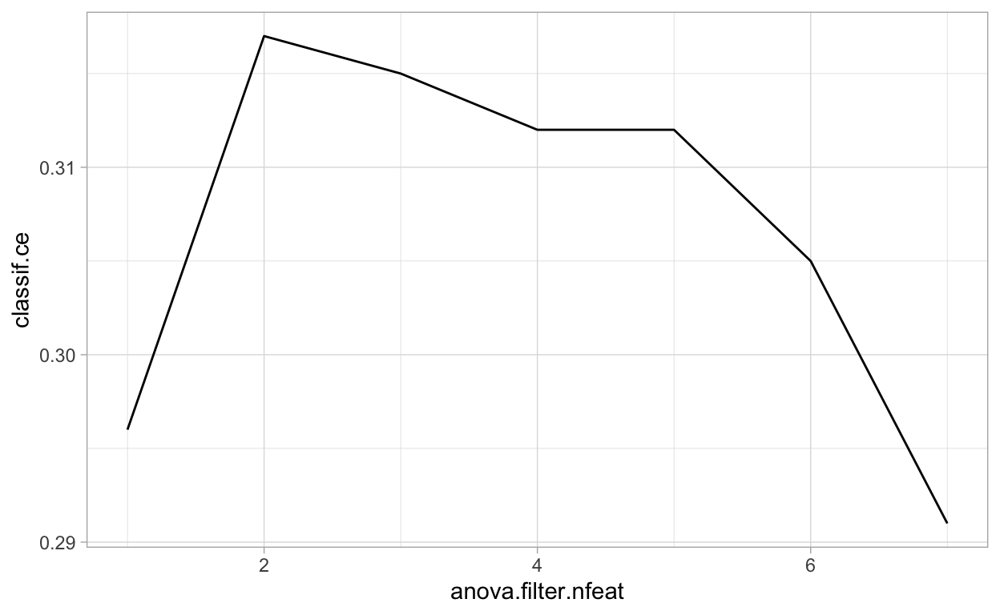
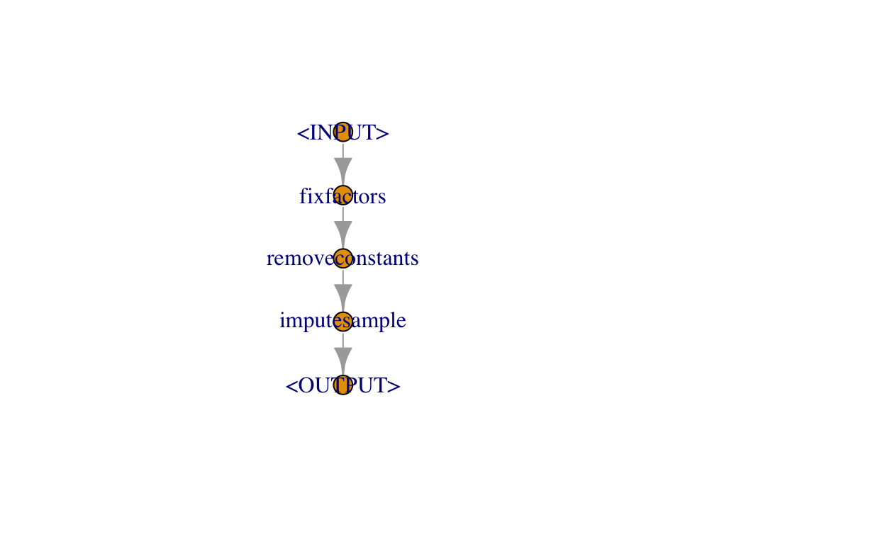

Intro
This is the third part in a serial of tutorials. The other parts of this series can be found here:
In this tutorial we will continue working with the German Credit Dataset. We already used different Learners on it and tried to optimize their hyperparameters. Now we will
- preprocess the data as an integrated step of the model fitting process
- tune the preprocessing parameters
- use multiple
Learnersin an ensemble model - see some techniques that make
Learners able to tackle challenging datasets that they could not handle otherwise.
Prerequisites
library("data.table")
library("mlr3")
library("mlr3learners")
library("mlr3pipelines")
library("mlr3tuning")
library("ggplot2")We use the same data as in the mlr3_basics_german_credit example, but will restrict ourselves to the numerical features. To make things interesting, we introduce missing values in the dataset.
task = tsk("german_credit")
credit_full = task$data()
credit = credit_full[, sapply(credit_full, is.numeric), with = FALSE]
set.seed(20191101)
## turn 10% of values into an NA
credit = credit[, lapply(.SD, function(x) {
x[sample(c(TRUE, NA), length(x), replace = TRUE, prob = c(.9, .1))]
})]
credit$credit_risk = credit_full$credit_risk
task = TaskClassif$new("GermanCredit", credit, "credit_risk")- We instantiate a resampling instance for this task to be able to compare resampling performance.
set.seed(20191101)
cv10_instance = rsmp("cv")$instantiate(task)Uncomment the following line if you are running this locally (i.e. not on RStudio Cloud).
# future::plan("multiprocess")Intro
In this tutorial we will take a look at composite machine learning algorithms that may incorporate data preprocessing or the combination of multiple Learners (“ensemble methods”).
- The package we use is mlr3pipelines, which enables us to chain “
PipeOp” objects into data flow graphs. Load the package using
library("mlr3pipelines")- Available
PipeOps are enumareted in themlr_pipeopsdictionary.
mlr_pipeops
<DictionaryPipeOp> with 42 stored values
Keys: boxcox, branch, chunk, classbalancing, classifavg, classweights,
colapply, collapsefactors, copy, encode, encodeimpact, encodelmer,
featureunion, filter, fixfactors, histbin, ica, imputehist,
imputemean, imputemedian, imputenewlvl, imputesample, kernelpca,
learner, learner_cv, missind, modelmatrix, mutate, nop, pca,
quantilebin, regravg, removeconstants, scale, scalemaxabs,
scalerange, select, smote, spatialsign, subsample, unbranch,
yeojohnsonMissing Value Imputation
- Trying to train a Random Forest fails because the model can not handle missing values.
ranger = lrn("classif.ranger")
ranger$train(task)
Error: Missing data in columns: age, amount, duration, installment_rate, number_credits, people_liable, present_residence.- We can impute using a
PipeOp. What are the imputationPipeOps?
mlr_pipeops$keys("^impute")
[1] "imputehist" "imputemean" "imputemedian" "imputenewlvl" "imputesample"- We choose to impute numeric features by their median. If we had factorial features, we could also add an imputer for them, e.g.
po("imputenewlvl"). - Let’s use the
PipeOpitself to create an imputed task. This shows us how thePipeOpworks.
imputer = po("imputemean")
task_imputed = imputer$train(list(task))[[1]]
task_imputed$head() # no missing values
credit_risk age amount duration installment_rate number_credits
1: good 67 1169.000 6 4.00000 2
2: bad 22 5951.000 48 2.99011 1
3: good 49 2096.000 12 2.99011 1
4: good 45 7882.000 42 2.00000 1
5: bad 53 4870.000 24 3.00000 2
6: good 35 3285.826 36 2.00000 1
people_liable present_residence
1: 1 4
2: 1 2
3: 2 3
4: 2 4
5: 2 4
6: 2 4- The
$state$modelslot contains the medians of all columns. ThePipeOpneeds to remember these to impute missing values in new data during the$predict()phase.
imputer$state$model
$age
[1] 35.66329
$amount
[1] 3285.826
$duration
[1] 20.94919
$installment_rate
[1] 2.99011
$number_credits
[1] 1.406285
$people_liable
[1] 1.153761
$present_residence
[1] 2.854645- If we used the imputed task for resampling, we would leak information from the test set into the training set. Therefore it is mandatory to attach the imputation operator to the
Learneritself, creating aGraphLearner.
imp_ranger = GraphLearner$new(po("imputemean") %>>% ranger)
imp_ranger$train(task) # runs without error: training succeeds- This can be used for resampling.
rr = resample(task, imp_ranger, cv10_instance)
rr$aggregate()
classif.ce
0.297 Feature Filtering
- Sometimes having fewer features is desirable (interpretability, cost of acquiring data, possibly even better performance)
- Use feature filter to preferentially keep features with most information
library("mlr3filters")
mlr_filters
<DictionaryFilter> with 17 stored values
Keys: anova, auc, carscore, cmim, correlation, disr, find_correlation,
importance, information_gain, jmi, jmim, kruskal_test, mim, mrmr,
njmim, performance, variance- We use the
"anova"filter. It uses an F-test for values in different target classes (equivalent to a t-test in the binary classification case).
filter = flt("anova")
filter$calculate(task_imputed)$scores
duration amount age installment_rate
10.71452277 5.70482677 2.62411784 1.14183395
number_credits present_residence people_liable
0.81379060 0.12841352 0.07345883 - What is the tradeoff between features and performance? Let’s find out by tuning.
- We incorporate our filtering in the pipeline using the
"filter"PipeOp - We remember that we also need to do imputation.
fpipe = po("imputemean") %>>% po("filter", filter, filter.nfeat = 3)
fpipe$train(task)[[1]]$head()
credit_risk age amount duration
1: good 67 1169.000 6
2: bad 22 5951.000 48
3: good 49 2096.000 12
4: good 45 7882.000 42
5: bad 53 4870.000 24
6: good 35 3285.826 36- We are going to tune over the
anova.filter.nfeatparameter; it regulates how many features are kept by the filter.
library("paradox")
searchspace = ParamSet$new(list(
ParamInt$new("anova.filter.nfeat", lower = 1, upper = length(task$feature_names))
))- Because this is only one parameter, we will use grid search. For higher dimensions, random search is more appropriate.
inst = TuningInstance$new(
task, fpipe %>>% lrn("classif.ranger"), cv10_instance, msr("classif.ce"),
searchspace, term("none")
)
tuner = tnr("grid_search")- Tuning may take a while…
tuner$tune(inst)- If we plot the performance over the number of features, we see the possible tradeoffs between sparsity and predictive performance.
arx = inst$archive("params")
ggplot(arx, aes(x = anova.filter.nfeat, y = classif.ce)) + geom_line()
Stacking
- We build a model on the predictions of learners
- This needs the
"learner_cv"PipeOp, because predictions need to be available during training already- the
"learner_cv"PipeOp performs cross-validation during the training phase and emits the cross validated predictions.
- the
- We use
"prob"prediction because it carries more information than response prediction
stackgraph = po("imputemean") %>>%
list(
po("learner_cv", lrn("classif.ranger", predict_type = "prob")),
po("learner_cv", lrn("classif.kknn", predict_type = "prob"))) %>>%
po("featureunion") %>>% lrn("classif.log_reg")- What does this
Graphlook like? We can plot it!
stackgraph$plot()
rr = resample(task, stackgraph, cv10_instance, store_model = TRUE)
rr$aggregate()
classif.ce
0.298 - Compare this to performance of individual
Learners. Note, however, that the difference is smaller than the variation in CV estimate.
bmr = benchmark(data.table(
task = list(task),
learner = list(
GraphLearner$new(po("imputemean") %>>% lrn("classif.ranger")),
GraphLearner$new(po("imputemean") %>>% lrn("classif.kknn")),
GraphLearner$new(po("imputemean") %>>% lrn("classif.log_reg"))),
resampling = list(cv10_instance)))
bmr$aggregate()[, c("learner_id", "classif.ce")]
learner_id classif.ce
1: imputemean.classif.ranger 0.304
2: imputemean.classif.kknn 0.350
3: imputemean.classif.log_reg 0.291- If we train the stacked
Learnerand look into the model, we can see how “important” each of the stacked models is
stackgraph$train(task)
$classif.log_reg.output
NULL
summary(stackgraph$pipeops$classif.log_reg$state$model)
Call:
stats::glm(formula = task$formula(), family = "binomial", data = task$data(),
model = FALSE)
Deviance Residuals:
Min 1Q Median 3Q Max
-1.5279 -0.8456 -0.6976 1.2608 1.9124
Coefficients: (2 not defined because of singularities)
Estimate Std. Error z value Pr(>|z|)
(Intercept) 1.4378 0.3268 4.399 0.0000109 ***
classif.ranger.prob.good -2.5287 0.5308 -4.764 0.0000019 ***
classif.ranger.prob.bad NA NA NA NA
classif.kknn.prob.good -0.8385 0.3418 -2.454 0.0141 *
classif.kknn.prob.bad NA NA NA NA
---
Signif. codes: 0 '***' 0.001 '**' 0.01 '*' 0.05 '.' 0.1 ' ' 1
(Dispersion parameter for binomial family taken to be 1)
Null deviance: 1221.7 on 999 degrees of freedom
Residual deviance: 1168.6 on 997 degrees of freedom
AIC: 1174.6
Number of Fisher Scoring iterations: 4- The Random Forest (
ranger) contributes more to the outcome, as one would expect, because it is generally a stronger model.
Robustify: Preventing new Prediction Factor Levels and other Problems
- Let’s shift contexts: We take the full German Credit dataset.
task = tsk("german_credit")
task$head()
credit_risk age amount credit_history duration
1: good 67 1169 critical account/other credits existing 6
2: bad 22 5951 existing credits paid back duly till now 48
3: good 49 2096 critical account/other credits existing 12
4: good 45 7882 existing credits paid back duly till now 42
5: bad 53 4870 delay in paying off in the past 24
6: good 35 9055 existing credits paid back duly till now 36
employment_duration foreign_worker housing installment_rate
1: ... >= 7 years yes own 4
2: 1 <= ... < 4 years yes own 2
3: 4 <= ... < 7 years yes own 2
4: 4 <= ... < 7 years yes for free 2
5: 1 <= ... < 4 years yes for free 3
6: 1 <= ... < 4 years yes for free 2
job number_credits other_debtors
1: skilled employee/official 2 none
2: skilled employee/official 1 none
3: unskilled - resident 1 none
4: skilled employee/official 1 guarantor
5: skilled employee/official 2 none
6: unskilled - resident 1 none
other_installment_plans people_liable personal_status_sex
1: none 1 male : single
2: none 1 female : divorced/separated/married
3: none 2 male : single
4: none 2 male : single
5: none 2 male : single
6: none 2 male : single
present_residence property
1: 4 real estate
2: 2 real estate
3: 3 real estate
4: 4 building society savings agreement/life insurance
5: 4 unknown/no property
6: 4 unknown/no property
purpose savings status telephone
1: domestic appliances unknown/no savings account ... < 0 DM yes
2: domestic appliances ... < 100 DM 0 <= ... < 200 DM no
3: retraining ... < 100 DM no checking account no
4: radio/television ... < 100 DM ... < 0 DM no
5: car (new) ... < 100 DM ... < 0 DM no
6: retraining unknown/no savings account no checking account yes- When training with a small datasset, or datasets with many factor levels, it is possible that not all possible factor levels are visible to the
Learnerduring training. Prediction then fails because theLearnerdoes not know how to handle unseen factor levels.
logreg = lrn("classif.log_reg")
logreg$train(task$clone()$filter(1:30))
logreg$predict(task)
Error in model.frame.default(Terms, newdata, na.action = na.action, xlev = object$xlevels): factor job has new levels unemployed/unskilled - non-resident- Many
Learners can not handle new levels during prediction \(\Rightarrow\) we use the"fixfactors"PipeOpto prevent that "fixfactors"introducesNAvalues; we may need to impute afterwards.- \(\Rightarrow\) We use
"imputesample", but withaffect_colsset to only factorial features.
- \(\Rightarrow\) We use
- Columns that are all-constant may also be a problem:
logreg = lrn("classif.log_reg")
logreg$train(task$clone()$filter(1:2))
Error in `contrasts<-`(`*tmp*`, value = contr.funs[1 + isOF[nn]]): contrasts can be applied only to factors with 2 or more levels- This can be fixed using
"removeconstants" - We get the following robustification pipeline:
robustify = po("fixfactors") %>>%
po("removeconstants") %>>%
po("imputesample", affect_columns = selector_type(c("ordered", "factor")))
robustify$plot()
- This works even in very pathological conditions.
- You may need to combine it with imputation if the data could have missing values.
roblogreg = GraphLearner$new(robustify %>>% logreg)
roblogreg$train(task$clone()$filter(1:2))
roblogreg$predict(task)
<PredictionClassif> for 1000 observations:
row_id truth response
1 good good
2 bad bad
3 good good
---
998 good bad
999 bad bad
1000 good badEncoding Categorical Features
Some Learners, even important ones like xgboost, can not handle categorical features.
xgb = lrn("classif.xgboost")
xgb$train(task)
Error: <TaskClassif:german_credit> has the following unsupported feature types: factor, ordered- Use
po("encode"), orpo("encodeimpact")to perform factor encoding."encode"does one-hot encoding or similar"encodeimpact"does impact-encoding, which may work better for features with many factor levels
xgb_all = GraphLearner$new(po("encode") %>>% xgb)
xgb_all$train(task) # runs without errorYour Ideas!
- Try different methods for preprocessing and training
- Some hints:
- It is not allowed to have two
PipeOps with the sameIDin aGraph. Initialize aPipeOpwithpo("...", id = "xyz")to change its ID on construction - If you build large
Graphs involving complicated optimizations, like too many"learner_cv", then they may need a long time to train - Use the
affect_columnsparameter if you want aPipeOpto only operate on part of the data. Usepo("select")if you want to remove certain columns (possibly only along a single branch of multiple parallel branches). Both takeselector_XXX()arguments, e.g.selector_type("integer") - You may get the best performance if you actually inspect the features and see what kind of transformations work best for them.
- See what
PipeOps are available by inspectingmlr_pipeops$keys(), and get help about them using?mlr_pipeops_XXX.
- It is not allowed to have two